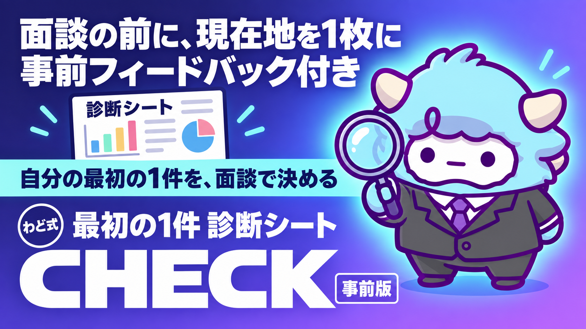
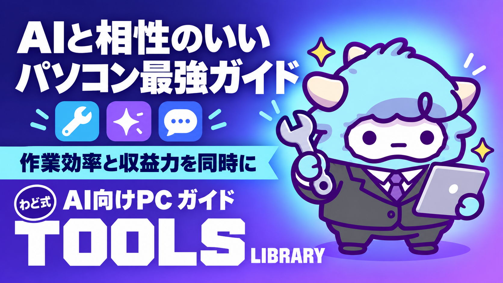
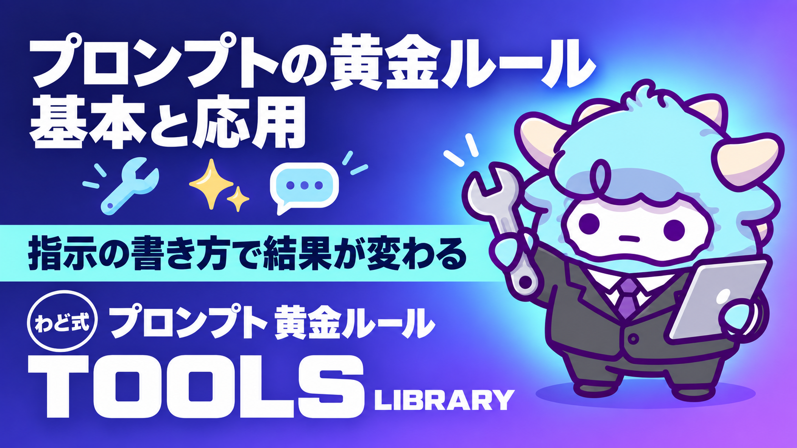
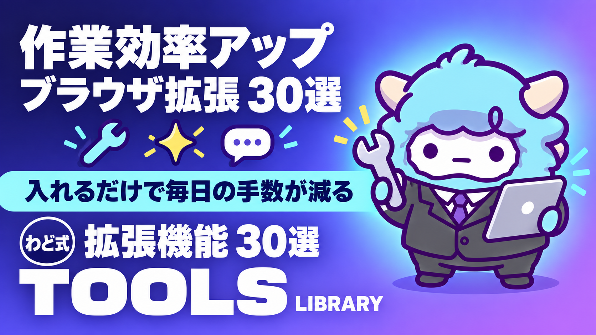
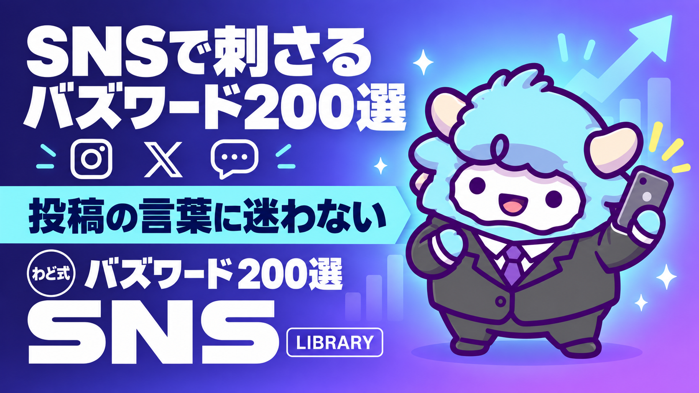
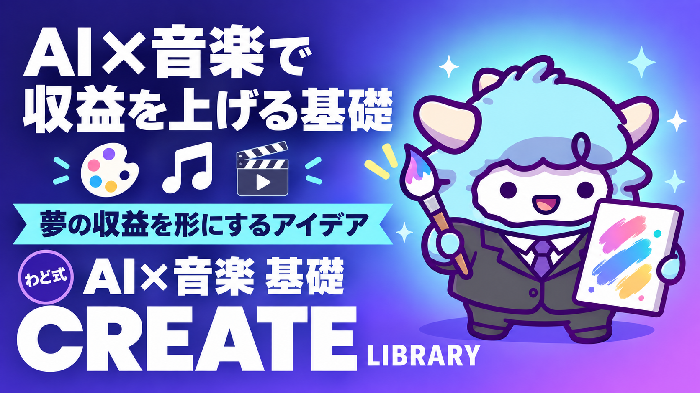
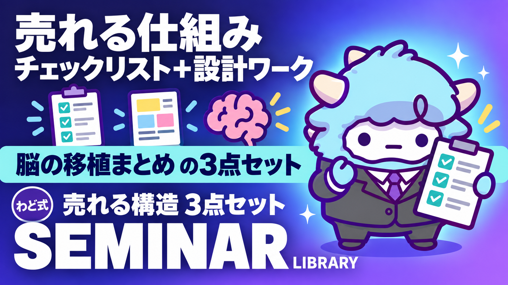

面談予約特典
面談を予約した方が受け取れます


N05

N09
N14
N18
N24
N25
N26
N31
N34
N36
N37
N38
N40
わど式AIマネタイズライブラリ
面談を予約した方が読める、読み物・シート・ツールのライブラリです。各ページは Notion などの外部ページで開きます。更新から時間が経っているものには更新月を添えています（ツールの画面や料金は各公式サイトで確かめてください）。
副業
新版：未経験・自宅でも◎！月10万以上稼げるAIマネタイズ
Notion で開くたった1日で全て学べる！AIマネタイズ完全攻略
Notion で開く新版：月収100万円を目指す！達成者のAIマネタイズケーススタディ
Notion で開く最新版：AIマネタイズランキング2026
Notion で開くAIライティングで収益化するロードマップ
Notion で開く自分の強みと向き合う「徹底自己分析ツール」
Notion で開く自分に合ったマネタイズが見つかる商品作成ツール
Notion で開く飛ぶように売れる！コピーライティング作成プロンプト集
Notion で開く集客の要！個別相談＆セールスセミナー完全攻略ガイド
Notion で開く新版：あなたのAIマネタイズを全力サポート！すぐ使えるプロンプト大全
Notion で開くAI×コンテンツ販売｜選び方ひとつで手取りが30%変わる。適性診断プロンプト付き
Notion で開くツール
AI翻訳ツール比較：精度・コスパ・スピードを最大化する選び方
Notion で開く
新版：作業効率＆収益力が同時アップ！AIと相性のいいパソコン最強ガイド
Notion で開くGrok-4 基礎入門資料
スライド で開く新版：決定版！！2026年最強AIツール10選
シート で開く
新版：プロンプト作成の黄金ルール：AI活用を加速させる基本と応用
Notion で開く効率化
新版：圧倒的な情報管理力を手に入れる！議事録作成
Notion で開く新版：タスク管理の最強メソッド：Notionで仕組み化するAIマネタイズワークフロー
Notion で開く
作業効率アップ！初心者向けChrome拡張機能30選
Notion で開くローカルAI
Claude Coworkを「AI社員」に変えるプロンプト10選を大公開！
Notion で開く【動画あり】小学生でも分かる。Claude Code 1分でセットアップ＋α
Notion で開く【プロしか知らない】Claude codeの「裏ワザ」3選
Notion で開くSNS
新版：AI美女物販で稼ぐ！競合分析リスト一覧
シート で開く
新版：バズるコンテンツの極意！AI美女競合リスト50
シート で開く新版：AI美女投稿で伸びるヒント！バズった事例解説と成功ポイント
シート で開く新版：最先端の稼ぎ方！AIインフルエンサー競合リスト50
シート で開く新版：差別化で収益を最大化！ショート動画×AIの新・稼ぎ方マニュアル
Notion で開く【保存版】Gemini 3 攻略！SNS自動化から収益化までのロードマップ
Notion で開く【保存版】AIで身バレせずインスタを伸ばす方法
Notion で開く
新版：ソーシャルメディア活用の鍵！SNSで刺さるバズワード200選
Notion で開く新版：SNS運用の新時代を切り拓く！AIを駆使した爆速成長の秘訣
Notion で開く新版：最新トレンドをいち早くキャッチ！AI系発信者競合リスト∞
シート で開く新版：もう困らない！投稿ネタを量産する"わど式"アイデア拡張術
Notion で開く【インスタ・X運用にそのまま使える】ChatGPT Images 2.0 最強活用法5選
Notion で開くGrokを活用したインスタ・X攻略法を大公開！
Notion で開くマインド
今日から始める！人生を劇的に好転させる"最強習慣"25選
Notion で開くAIで仕事はどう変わる？成功事例から読み解く"AI時代のキャリアアップ戦略"
Notion で開くAIは「やらないと損」のフェーズに入った。副業から始めれば、リスクゼロで波に乗れる。
Notion で開くクリエイティブ
新版：高品質なビジュアルコンテンツを大量生産！プロがおすすめする画像生成AI5選
Notion で開く新版：注目を集める画像生成を一気に成長！AI美女プロンプトの基本
Notion で開く
新版：AI×音楽で稼ぐ！夢の収益を実現するための基礎とアイデア
Notion で開く新版：完全AIでミュージックビデオを作る！次世代の稼ぎ方ガイド
Notion で開く新版：コピペで即バズる！話題を独り占めするAI美女プロンプト大全
Notion で開くAIライフハック動画の作り方 プロンプト付き解説
Notion で開く新版：AIで誰でも作曲家に！初心者でも簡単な音楽生成テクニック
Notion で開くセミナー・勉強会の参加者特典

売れる仕組みチェックリスト／「売れる構造」設計ワークシート／脳の移植まとめ（3点）
Notion で開く勉強会「全部覚えなくていい」参加者特典
Notion で開くページの内容は制作時点のものです。ツールの提供状況は各公式サイトで確かめてください。